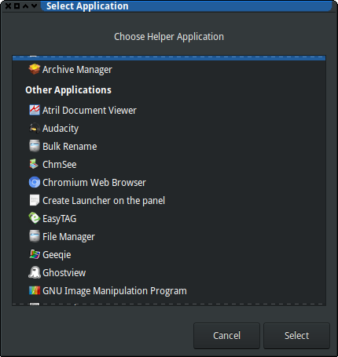

Opening files with a custom application in GNOME and suchlike
In effort to make things simper, the software developers often reach quite an opposite goal. One such example I’ve suddenly stumbled upon today is GTK Open With dialog: adding a custom item there is, surprisingly, quite a technical task, in a sense that you have to use google, read the docs and edit some files (with a text editor!). I simply had to share the details.
The problem ¶
If you’re anything like me, from time to time you experience an urge
to open a file in vim, even from Firefox, or from your point-and-click
file manager. I don’t like the GUI versions of vim, so I would prefer
to open it in a new terminal window – something like
urxvt <other options> -e vim <filename>
But the best thing you can get from those overly graphical programs is the GTK Open With dialog that allows you (with another dialog) to select another application:

As I’m not that young and I’ve seen some things in my time, I can still remember that there was a button that allowed the user to point to a custom binary. This was far from perfect — I would prefer an interface that would allow to put in a command line — but it was still something. Now, no such or similar button is provided; so, I had to dwell into the mythic realm of Desktop Files.
The mythic realm of Desktop Files ¶
I’ve always had a strange feeling about all the freedesktop.org
standards – that what they do is very unix-way, and, at the same time,
it’s absolutely not.
The Open With dialog takes the list of the applications from the
desktop files that should be placed in the specific well-known
locations: either /usr/share/applications/,
/usr/local/share/applications or ~/.local/share/applications/. I’ve
chosen the latter, since it’s always better idea to play with your $HOME
then with your /.
The desktop files are, unsurprisingly, files, in a format that resembles INI. After some googling and some reading, I came up with a desktop file that is close to what is claimed to be minimal:
[Desktop Entry]
Exec=urxvt -geometry 144x42 -e vim %F
Type=Application
Name=ViTerm
I’ve put these lines into ~/.local/share/applications/viterm.desktop
file, and it just worked — no need to refresh or restart anything,
just reopen the application selection dialog.
Final words
I’ve put all the relevant words into the introduction of this article. It’s awesome that there is such degree of customizability, and I find that configuration via text files is quite convenient. It’s just a bit surprising that there is no other way…